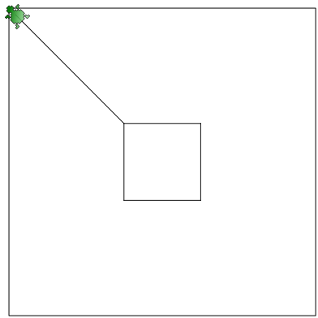

Изучение языка программирования Logo (Лого) в среде KTurtle
Методические замечания к курсу
Курс "Основы программирования на языке Logo (Лого) в среде KTurtle" предназначен для детей 10-13 лет (4-7 класс).
Язык команд русский, версия KDE4.
В курсе рассматриваются основные команды Logo, а также конструкции, изменяющие линейный ход программы. Курс не охватывает все возможности языка Лого и среды KTurtle, т.к. адаптирован для детей определенного возраста. Например, не рассматриваются цикл для и сложные логические выражения (с использованием и, или), т.к. данные конструкции могут быть слишком сложными для восприятия.
Курс был опробован в течение трех месяцев в учреждении дополнительного образования детей (осень 2010 г.). Было замечено следующее. Учащиеся 4 класса (2 человека) с трудом удерживают во внимании логику работы не линейной программы. Учащиеся 5 класса (основная группа) при соответствующем объяснении педагога почти все освоили данный материал; самостоятельное чтение ими приведенных ниже уроков не дает ожидаемого результата. Учащиеся 6 класса (3 человека) осваивают материал легко; пояснения педагога требуются при рассмотрении конструкций, нарушающих линейный ход программы. Один учащийся 7-го класса (с высокой успеваемостью) и один 9-го класса (с низкой успеваемостью) самостоятельно освоили данный материал.
| Прикрепленный файл | Размер |
|---|---|
| logo_kturtle.pdf | 2.11 Мб |
Урок 1. Программирование. Общее представление
Тема: Язык программирования Logo
Программа, язык программирования, программист
Для чего необходим компьютер? Ответить на этот вопрос можно по разному. Если попытаться сделать это как можно короче, то получится, что компьютер предназначен для хранения и обработки информации. В свою очередь, под информацией можно понимать почти всё, что угодно. Информацией могут быть символы, буквы, коды, слова, рисунки, звуки, видео...
С хранением информации должно быть все боле менее понятно: у компьютера есть память разного рода, куда записывается в определенном виде информация и в дальнейшем хранится там. А вот что касается ее обработки... Как же компьютер принимает решения о том, что делать с информацией? Никак и не принимает! Он ведь робот, послушная машина, он делает только то, что «скажет» (запишет в компьютерную память) человек.
Именно человек управляет поведением машин, которые лишь послушные, четкие, быстрые исполнители наших пожеланий. В быстроте, отсутствии усталости (в нашем понимании), почти безошибочности выполнения команд заключается преимущество вычислительных машин. Однако самым важным преимуществом является то, что команды человека можно записать в компьютерную память и оставить их выполнение на "потом"; кроме того, выполнять неограниченное количество раз. Итак, компьютеры не умнее людей; у машин нет желаний, творческого подхода, они самостоятельно не могут планировать свою деятельность. Чтобы компьютер что-то сделал, ему нужно руководство человека.
Как человек руководит компьютером или роботом? Составляет так называемые программы на понятном компьютеру языке (языке программирования) и закладывает их в его память. Затем, когда человеку потребуется, он командует компьютеру выполнить ту или иную программу.
Программа представляет собой набор команд, которые машина должна выполнить в определенной последовательности. При этом подразумевается, что будет достигнута та или иная цель, которую планировал человек.
Запустить программу на выполнение может любой человек. Для этого обычно бывает достаточно нажать какую-нибудь специальную кнопку или открыть определенный файл. Знаний при этом может быть минимум. Достаточно того, чтобы человек просто знал, что программа делает и как с ней работать. Такой гражданин называется пользователем. А вот чтобы написать программу (последовательность команд) на понятном компьютеру языке, нужно специальное образование, в результате которого получается так называемый программист. Именно профессиональные программисты умеют писать программы для вычислительных машин. Эти программы решают очень много разных задач. Обычному пользователю достаточно лишь знать, какая программа решает какую задачу. Ему вовсе не обязательно знать, как программа руководит компьютером, чтобы выполнить задачу, т.к. это знание - обязанность программиста.

Среда KTurtle и язык программирования Logo (Лого)
Мы с вами как начинающие программисты будем учиться составлять программы. Но поскольку мы только начинающие программисты, то и делать это будем немного "по игрушечному". Нашим исполнителем будет не настоящий компьютер (или робот), а маленькая черепашка. Это робот-черепашка, он послушный и всегда готовый к работе. От нас же требуется познакомиться с тем, как им можно командовать. Этому и будут посвящены уроки.
Сначала стоит познакомиться со средой обитания робота-черепахи. Средой является приложение (большая программа, которую написал взрослый программист) под названием KTurtle. Если вы еще не знаете, то "turtle" с английского переводится как "черепаха". Буква K впереди обозначает то, что это приложение предназначено для рабочего стола KDE для Linux.
Среда — это еще не язык программирования. Среда всего лишь создает удобное место для работы программиста и наблюдения за поведением программы. Язык программирования — это более важный компонент. Именно на нем мы "говорим" с компьютером; в нашем случае мы говорим с роботом-черепахой. Языком программирования поведения черепахи является язык Logo (или Лого - по-русски). Этот язык специально был придуман для обучения детей программированию. Команды на языке Logo могут быть как английскими, так и русскоязычными (а также французскими и др.).
Вот так выглядит приложение KTurtle сразу после запуска:

Почти всё, что умеет делать зеленая черепашка, - это бегать по холсту и рисовать на нём разным цветом, а также считать и писать. Вот такой вот нам достался незатейливый робот-исполнитель. С другой стороны, нам пока научиться управлять хотя бы им, а дальше уж дело пойдёт.
Команды на языке программирования Logo пишут в специально предназначенном для этого поле (редакторе кода). Передают их на выполнение черепахе с помощью специальной кнопки Выполнить, расположенной на панели инструментов.
После этого черепашка будет выполнять команды, написанной нами программы, а мы на холсте будем видеть результаты этого выполнения.
Вопросы и задания
- Что вы узнали из данного урока? Подготовьте пересказ на тему «Кто такие программисты и зачем они нужны».
- Может ли один и тот же человек выступать в роли и программиста и пользователя? Приведите примеры.
- Запустите приложение KTurtle. Расскажите, как вы будете работать в нем.
- Протестируйте работу приложения KTurtle. Для этого напишите в редакторе кода приведенные ниже две команды и передайте их черепахе на выполнение. Что произошло? Попытайтесь объяснить.
напиши ”Привет, мир!” вперёд 100
Урок 2. Вот тебе холст! Иди и напиши.
Тема: Язык программирования Logo
Холст и его координаты
Наш робот-черепаха перемещается по холсту. Для указания местоположения на холсте используются декартовы координаты (ось x и ось y). Ось x направлена по горизонтали слева направо. Чем правее здесь точка, тем значение ее больше. Ось y направлена сверху вниз. Это отличается от того, к чему мы привыкли в математике, где ось y направлена в противоположную сторону: снизу вверх. На нашей же координатной плоскости будет так: чем ниже точка, тем ее значение больше.
Место пересечения двух координатных осей (x и y) образует начало системы отсчета. Это точка (0,0). Координаты любой точки формируются пересечением двух прямых, которые перпендикулярны осям. Первое число координаты — это расстояние по оси x, второе — по оси y. Посмотрите на рисунок и разберитесь, как формируются координаты точек.

Изначально размер холста в KTurtle равен 400 на 400 точек. Вы можете приближать и удалять его, прокручивая колесо мыши или изменяя размер окна. Тем самым вы меняете масштаб, но не меняете его реальных размеров. Он все равно остается 400х400. Меняется лишь размер каждой "точки".
Мы как программисты можем изменить реальный размер холста, написав и затем выполнив определенную команду. Вот эта команда:
размер_холста x, y
При использовании данной команды вместо x и y следует прописать желаемый размер холста по оси x и по оси y. При этом не обязательно, чтобы x был равен y. Можно получить прямоугольный холст, например, дав команду вроде этой:
размер_холста 800, 550
Имейте в виду, что чем больше значение, тем мельче на холсте будет выглядеть черепаха. Ее размер по количеству точек постоянен и примерно равен 30х25 точек, а чем больше точек на экране, тем меньше на каждую из них приходится пространства монитора.
Учимся ходить и писать
Для перемещения черепахи по холсту используется такая команда:
иди x, y
Вместо x и y указываются новые координаты ее местоположения. Изначально же черепаха находится в середине холста (точка 200х200). Желательно, чтобы новые x и y черепахи были меньше соответствующих координат размера холста. Иначе она уползет за его приделы, хотя ничего страшного не произойдет.
Черепаха устанавливается на указанную точку центром своего тела.
После того, как мы передвинули черепаху в заданную нами точку, можно "попросить" ее что-нибудь вывести на экран. Делается это вот так:
напиши "строка"
Или так:
напиши число
Строки, буквы и какие-нибудь специфические символы берутся в кавычки. Числа пишутся без кавычек. Но если вы напишете число в кавычках, то ошибки не будет, просто компьютер будет считать ее строкой, а не числом. А вот запись букв без кавычек приведет к явной ошибке.
Например, мы можем пожелать вывести свое имя и возраст где-нибудь вверху холста. Для этого сначала переместим черепаху вверх и немного влево, скомандуем ей выполнить запись строки. Затем немного сместим ее (чтобы две надписи не накладывались друг на друга) и заставим вывести число:
сброс иди 150, 30 напиши "Саша" иди 200, 70 напиши 11
Обратите внимание на команду сброс впереди. Желательно, чтобы она всегда присутствовала в ваших программах впереди остального кода. Она перезагружает холст, удаляя все его предыдущие настройки и параллельно очищая его. Если этого не сделать, то могут возникнуть всякие неожиданности в виде наложенных друг на друга надписей и рисунков.
Задание
- Напишите программу, в результате выполнения которой на холсте сформируется примерно следующее:
- Измените размер холста на 600 точек по горизонтали и 300 по вертикали. Поменяйте положение букв и цифр на холсте так, чтобы снова получилось изображение как в первом задании (приблизительно).
Урок 3. Про то, как заставить робота рисовать
Тема: Язык программирования Logo
То, что мы уже знаем
Подведем итог того, что мы уже знаем об управлении черепахой и холстом.
- Для перезагрузки всех параметров холста предназначена команда сброс.
- Для установки нового размера холста должна быть выполнена команда размер_холста. После нее ставится пробел и указывается размер по оси x, затем, через запятую, размер по оси y.
- Черепаху можно перемещать по холсту с помощью команды иди. После команды через пробел указывается координаты точки назначения. Значение х отделяется от значения у запятой.
- Робот у нас грамотный. Поэтому он понимает команду напиши. Он может выводить на холст как строки (в кавычках), так и числа (без кавычек).
Это, пожалуй, всё, что нам известно на сегодняшний день.
Вперёд!...или все-таки назад?
Команда иди перемещает черепаху в определенное координатами (x и y) место. При таком перемещении (с помощью команды иди) на холсте не остается никакого следа. Можно представить, что мы как бы поднимаем черепаху в одном месте, а затем опускаем ее в другом. Однако черепаху можно также перемещать таким образом, чтобы на холсте оставался след от ее перемещения. Для этого используются другие команды - вперёд и назад.
Робот-черепаха не слишком гибкое создание, ходит только головой вперёд, или пятиться задом назад. Понятно, что после передвижения ее местоположение меняется, она оказывается в новом месте холста и уже имеет другие координаты местонахождения. При перемещении черепахи с помощью команд вперёд и назад указываются не координаты нового места, где она должна оказаться, а расстояние, на которое ей следует переместиться от первоначального положения. Расстояние измеряется теми же точками, что и размер холста.
(Обратите внимание на букву ё в команде вперёд, если вместо нее будет е, то произойдет ошибка.)
Если черепахе дать команду вперёд, то она проползет головой вперёд и оставит за собой след - черную линию. Если черепахе дать команду назад, то она попятится, а линия окажется перед ней.
Вот пример кода и результат, который он формирует на холсте:
сброс вперёд 99 иди 100, 200 назад 50

Первоначально черепаха стоит в центре холста. Мы заставляем ее идти вперёд на расстояние в 99 точек. После этого перемещаем ее в точку с координатой 100х200 и приказываем двигаться задом на 50 точек.
Задание
Запрограммируйте изображение, представленное ниже. При этом верхний ряд линий должен формироваться командой вперёд, а нижний - командой назад.
Главное выбрать направление
Как вы могли заметить, мы научились рисовать только вертикальные линии, т.к. голова черепахи всегда смотрит вверх, а хвост, соответственно, - вниз. А как же провести горизонтальную линию или линию под любым углом к главной оси? (Пусть главной осью у нас будет вертикальная линия.)
Оказывается нашего робота можно поворачивать на заданный нами градус. Для этого используется команда направление. Полный поворот вокруг своей оси приравнивается к 360 градусам. Черепаха, смотрящая точно вверх имеет направление 0 (или 360). Смотрящая вправо — 90. Вниз — 180. Влево — 270. Можно указывать промежуточные значения между приведенными выше величинами (например, 11, 135, 200, 355 и т.п.). Например, поворот на угол в -45 градусов даст тот же результат, что и поворот на 315 градусов, т.к. 360 - 45 = 0 + 315.
Рассмотрим пример программы и получившееся при ее выполнении изображение:
сброс направление 90 назад 150 направление 120 вперёд 300

Сначала черепаха была повернута на 90 градусов и прошлась задом на 150 точек. Затем ее повернули на 120 градусов по отношению к главной оси и сказали ползти естественным ходом (т.е. головой вперёд).
Если вам трудно понять как повернуть черепаху, чтобы задать ей желаемое направление, можно воспользоваться специальным инструментом, который находится в меню Сервис ? Выбор направления.
Поводите мышкой по окружности и вы заметите как красная линия и черепашка поворачиваются. Справа в поле Новое направление вы увидите значение градусов. Можно его просто запомнить, а потом использовать в своей программе. Однако можно поступить и по другому. В выпадающем списке Команда выбрать команду направление. Далее нажать кнопку Копировать в буфер обмена или Вставить в редактор. Первую лучше нажимать, когда вы не уверенны, что курсор в редакторе кода стоит в нужной строке. После закрытия данного диалогового окна можно выполнить операцию вставки из буфера обмена в редактор кода.
Задание
Напишите программы, в результате выполнения которых робот нарисует на холсте представленные ниже изображения (внешний квадрат — это границы холста, его программировать не надо).
Подсказка: у второго изображения левая и правая стороны симметричны. Сначала создайте одну сторону, затем скопируйте код и вставьте его ниже (только не копируйте команду сброс), после этого измените градусы (числа у команды направление) на противоположные (допишите перед числами минус или удалите его).


Урок 4. Абсолютность и относительность
Тема: Язык программирования Logo
Подними перо, опусти перо
Когда мы перемещае черепаху с помощью команд вперёд и назад, то она рисует линии. По идее... Но на самом деле может и не рисовать. В этом случае перед командами вперёд и назад используется команда перо_подними, заставляющая нашего робота-черепаху оторвать от холста то, чем он рисует. Поэтому последующее выполнение команд вперёд и назад приводит к перемещению черепахи на указанное расстояние, но никаких следов при этом она уже не оставляет (перо-то поднято!).
Для того чтобы черепаха снова начала рисовать, надо перо опустить с помощью команды перо_опусти. После этого команды будут работать так, как это задумано с самого начала – рисовать линии.
По умолчанию перо опущено. Это значит, что если вы не командовали роботу поднимать перо, то значит он будет рисовать.
Рассмотрим такую последовательность команд:
сброс вперёд 70 перо_подними вперёд 50 перо_опусти вперёд 40
В результате выполнения на холсте получится следующее:
Сначала черепаха прошлась вперёд на 70 точек и оставила за собой линию. Затем она подняла перо и прошагала вперёд еще на 50 точек. Но поскольку перо было поднято, то линии за собой она не оставила. Далее поступила команда опустить перо и идти вперёд еще на 40 точек. Т.к. перо было предварительно опущено, мы видим линию на протяжении этих 40 точек.
Задание
Получите такое изображение на холсте, как представлено ниже. При этом команды иди и направление должны использоваться всего один раз (вначале программного кода после команды сброс).
В чем смысл относительности
Не будем забывать, что команда иди просто перемещает черепаху без вычерчивания линий. Если подумать, то команда иди заменяет целых две команды перо_подними и вперёд (или назад). В обоих случаях черепаха будет перемещаться без рисования линий.
Так зачем же был придуман такой избыточный набор команд для нашего робота. Ведь можно было ограничиться командами иди и вперёд (назад). Первая служила бы только для перемещения без рисования, а вторые – для перемещения с рисованием. Зачем же нужно поднимать перо, а затем шагать без рисования командой, которая изначально придумана для рисования?
Действительно, можно было бы ограничиться только командами иди и вперёд. Однако их использование не всегда удобно. Например, вам требуется рисовать пунктирную линию, где расстояние между черточками должно быть равно 20 точкам. Если вы будете использовать только команды иди и вперёд, то придется каждый раз вычислять координату начала очередной черточки. Это будет сделать очень трудно, если пунктирная линия идет не по горизонтали и не по вертикали, а как-нибудь наискосок. Или другой пример. После рисования какого-нибудь элемента на холсте, вы уже не знаете, где стоит черепаха (ее координаты), но знаете, что вам надо отступить вправо на 45 точек. Проще будет поднять перо, повернуть черепаху и выполнить команду вперёд (или назад), чем вычислять координаты исходя из начальных значений и пройденного черепахой пути.
Итак, команда иди принимает точные (абсолютные) координаты нашей координатной плоскости (холста), а команды вперёд и назад перемещают черепаху относительно ее текущего положения на указанную величину. Где бы ни стояла черепаха, команда иди 10, 20 всегда переместит ее в начало холста, отступив от краев 10 точек по x и 20 точек по y. Где окажется черепаха после команды вперёд 100 зависит от того, где она была до этого и как была повернута.
Относительные повороты
На прошлом занятии мы изучили команду направление. Это команда принимает абсолютные величины. Для нее есть север-верх (0 градусов), восток-право (90), юг-низ (180) и запад-лево (270), а также промежуточные абсолютные направления. Как бы ни была повернута черепаха, команда направление 135 абсолютно всегда заставит ее повернуть голову на юго-восток (вниз и вправо).
Но что, если мы сначала повернули черепаху по направлению в 135 градусов на нашей абсолютной окружности, а теперь нам потребовалось повернуть ее на 77 градусов против часовой стрелки. Для того, чтобы определить новое абсолютное направление следует из 135 вычесть 77 (вычесть, т.к. поворачиваем против часовой стрелки). Но куда проще было бы просто сказать роботу налево 77 и ничего не вычислять. Робот-черепаха повернется на 77 градусов против часовой стрелки относительно его текущего положения.
Действительно в языке программирования Logo предусмотрены команды относительного поворота – налево и направо. Эти команды используются даже чаще, чем команда направление. Однако команда направление может быть очень полезна. Например, вы крутили и вертели черепаху, а потом вам надо направить ее в четко определенное направление (например, точно вправо). Команда направление 90 решит все проблемы.
Задание
Напишите код, в результате выполнения которого черепашка рисовала бы на холсте представленные ниже фигуры. Обязательно используйте команды налево и направо.
Урок 5. Установки цвета и размера
Тема: Язык программирования Logo
До сих пор мы использовали черепаху для рисования черных линий на белом холсте. Также мы использовали команду напиши для вывода символов и цифр на экран, и они тоже были черными. Однако возможности черепахи этим не ограничиваются. Она может чертить и писать разным цветом, а также имеется возможность изменять цвет самого холста.
Чтобы изменить цвет линии, до команд вперёд или назад должна быть применена команда цвет_пера. Для установки цвета холста используется команда цвет_холста. После этих команд прописывается нужный цвет. Но чтобы понять, как задать желаемый цвет, необходимо иметь представление о так называемой модели RGB для кодирования цвета.
Модель RGB
Окружающий нас мир очень разнообразен. Многообразие различных цветовых оттенков не поддается исчислению, хотя человеческий глаз и не может различить очень близкие цвета. Конечно люди видят и описывают не все цвета, но даже их надо как-то уметь получать искусственно используя различные средства.
Монитор – это электронное устройство. Работая, он может отображать на экране определенный ряд цветов. Каждая точка на экране может быть любым цветом из заданного ряда. Обычно для мониторов используется модель кодирования цвета RGB. Согласно этой модели цвет каждой точки определяется соотношением красного (R - red), зеленого (G - green) и синего (B – blue). Максимальное значение каждого цвета равно 255, а минимальное – 0. Так запись 0, 255, 0 обозначает чисто зеленый цвет. Смесь цветов дает различные оттенки. Чем все значения больше, тем цвет светлее, чем меньше – темнее. Три нуля дают в итоге черный цвет, а три значения 255 – белый. Равные значения трех чисел (например, 176, 176, 176) дают серый цвет, при этом, чем значения меньше, тем он темнее.
В программе KTurtle мы не обязаны знать все тонкости кодирования цвета. Здесь есть инструмент, который помогает определить код желаемого цвета. Он находится в меню Сервис, пункт Выбор цвета.

Код цвета определяется числами в поле, которое находится в нижнем левом углу. Найти нужный цвет можно путем перемещения движков. Цвет, который при этом получается, сразу виден.
Цвет холста и цвет пера
Выше уже было сказано, что цвета холста и пера устанавливаются с помощью команд цвет_холста и цвет_пера соответственно. Далее, после этих команд пишутся три числа через запятую. Например:
цвет_холста 243, 215, 170 цвет_пера 55, 120, 30
Цвет пера и цвет холста можно менять в программе множество раз. Однако смена цвета холста в середине программы особого смысла не имеет, т.к. в результате вы увидите тот цвет, который был указан последним. Это связано с тем, что в обычном режиме черепаха выполняет команды быстро и можно не заметить, как фон мигает.
Смена же цвета пера позволит вам выводить на холсте линии и текст разным цветом.
Задание
Запрограммируйте изображение представленное на рисунке ниже. При этом холст пусть будет светло-оранжевым, кривая слева – темно-зеленым цветом, прямая справа – фиолетовым, а надпись внизу – темно-серым.

Толщина пера и размер шрифта
Есть еще две команды языка Лого которые изменяют перо черепахи-робота. Это толщина_пера и размер_шрифта.
Мы можем изменять размер линии, передав команде толщина_пера какое-нибудь число (обозначающее количество точек). Так, если установить ширину пера в 5 точек, то черепаха станет рисовать толстые линии, а если написать 200, то черепаха будет рисовать такую толстую линию, что она больше будет похожа на прямоугольник, чем на линию. Такая хитрость может быть использована, если потребуется нарисовать закрашенный прямоугольник. При этом следует иметь в виду, что точки, в которых измеряется толщина пера, не совсем соответствуют точкам, в которых измеряется холст.
Размер шрифта измеряется в пунктах, так же как в текстовых процессорах. Размер шрифта в 12 пунктов установлен по умолчанию (если не были изменены настройки среды KDE).
Задание
Получите изображение как на рисунке (фон черный, линии белая, желтая и голубая).
Урок 6. Переменные. Они такие непостоянные...
Тема: Язык программирования Logo
Давайте немного подумаем над тем, как компьютер работает с данными. Под данными мы будем понимать любые числа, слова или одиночные символы (буквы, знаки). Когда мы пишем исходный код, то в нем используются команды (например, цвет_холста, налево, назад и др.) и данные (например, 50, 135, "a", "Саша", "*" и т.п.). И то и другое сохраняется в компьютерной памяти, которая разделена на ячейки. Под каждую команду или данное отводится одна или несколько ячеек (в зависимости от их размера).
Если в программе мы используем несколько раз одну и туже команду в разных частях кода, то это вовсе не значит, что в памяти сама команда сохраняется множество раз. Черепашка-компьютер знает, в какой ячейке хранится единственный "оригинал" команды и "берёт" его оттуда каждый раз, когда видит эту команду в коде, который мы написали. Действительно. Это очень экономно по отношению к памяти. Представьте, что мы использовали в своем коде раз 10-20 команду вперёд. Если бы под каждый ее "экземпляр" выделялась память, то мы бы заняли как минимум 10-20 ячеек. А так нам нужна всего лишь одна ячейка, к которой исполнитель-черепаха будем обращаться в случае надобности.
С данными же дела обстоят сложнее. Если мы несколько раз в коде используем, например, число 50, то это не значит, что это число "лежит" только в одном месте памяти, и черепаха постоянно к этому месту обращается. Когда мы просто используем "голые" данные в коде, то под каждое число, букву, слово выделяется своя область памяти, даже если данные совпадают. Ведь компьютер не знает, что мы имеем в виду. Может быть, нам действительно потребуется в программе множество одинаковых чисел.
Чтобы можно было управлять данными в программе, программистами на заре появления программирования был придуман так называемый механизм переменных. Он заключается в следующем. Когда мы вводим некое данное в программу, компьютер помещает его в свободную ячейку своей памяти. На самом деле нам все равно, где эта ячейка находится физически, но мы даем ей имя (какое понравится). И в дальнейшем мы всегда можем обратиться по имени к ячейке, где было сохранено наше данное, и получить его оттуда.
Итак. Данные в программе могут стать переменными. Переменные имеют имена, по которым программист может обращаться к конкретным ячейкам памяти с данными. Но почему же переменные называются переменными? Ведь это обозначает что-то изменчивое, непостоянное. Дело в том, что программист может изменять их значение. Нет, не вводить другое число или строку, которое поместится в другие ячейки, а именно изменять уже ранее занятую ячейку (ячейки) памяти. Зачем это нужно? Причин много. Рассмотрим хотя бы такой пример:
сброс иди 150, 150 направо 60 вперёд 50 налево 60 назад 50 направо 60 вперёд 50
Посмотрите на этот код (он заставляет черепаху нарисовать небольшой зигзаг, но сейчас это не важно). Здесь три раза используется число 50 и три раза число 60. Каждое число занимает свою ячейку (или несколько ячеек) памяти, т.е. в итоге получается как минимум шесть занятых ячеек. Но допустим у нас много памяти и нам ее не жалко. Хорошо. Но что вы будете делать, если потребуется сделать зигзаг немного больше, а угол между отрезками немного меньше? Придется исправлять все числа. Если программа была бы еще больше, то это абсолютно неэффективно. Куда правильней было бы записать пример выше вот так:
сброс иди 150, 150 $л = 50 $у = 60 направо $у вперёд $л налево $у назад $л направо $у вперёд $л
На первый взгляд стало только хуже. Появились две дополнительные строчки кода в начале. Но это только кажется. В этих двух строчках и происходит загадочное явление под названием "присвоение переменным значений", или запись данных в ячейки памяти и присвоение этим ячейка имен. $л и $y – это имена переменных. В последней версии языка Лого значок $ (доллар) стал обязательным перед именем переменной. Вместо "л" и "у" может быть что угодно, но желательно, чтобы по смыслу это что-то значило. Например, здесь "л" – это сокращение от "линия", а "у" – от "угол". Можно было бы (и правильней было бы) использовать вот такие переменные: $линия, $угол. Они более очевидны для любого, кто будет читать код.
Итак, вернемся к вопросу, почему эти две строчки кода сделали программу лучше. Теперь, чтобы изменить зигзаг достаточно поменять числа в местах, где они становятся переменными (связываются с именами). Не нужно просматривать всю программу (представьте, что она очень большая) в поисках числа 50, которое обозначает длину линии, чтобы его изменить.
Но это вовсе не главное волшебство переменных. От того, что их значения можно менять однажды в начале программы они переменными не становятся. Их значения можно менять сколько угодно раз в середине, конце и где угодно в программном коде. Значение переменной в начале выполнения программы может не совпадать с ее значением в конце. Чаще всего так и происходит. Рассмотрим пример:
сброс иди 50, 50 $л = 50 $у = 60 направо $у вперёд $л налево $у назад $л направо $у вперёд $л направление 0 иди 10, 10 напиши $л иди 30, 10 напиши $у иди 100, 200 $л = $л + 100 $у = $у + 20 направо $у вперёд $л налево $у назад $л направо $у вперёд $л направление 0 иди 10, 380 напиши $л иди 50, 380 напиши $у иди 400, 400

Перед тем как рисовать второй зигзаг, мы меняем значения переменных на 100 и 20 единиц. Мы могли бы вычилить их сразу и записать так: $л = 150, $у = 80. Но зачем так утруждать себя, если мы хотим изменить величину на какое-то значение, а не преследуем цель узнать конкретное значение (хотя такое тоже может быть). В коде мы выводим значения переменных на холст, чтобы убедиться, что в различные моменты времени они имеют разные значения.
Задание
Напишите код, который выводит на холст большой квадрат и маленький шестиугольник. При этом командам должны передаваться на выполнение не числа, а переменные, связанные с числами. Используйте только две переменные, изменив их значение перед "рисованием" второй фигуры.
Для справки: угол в квадрате равен 360/4 = 90 градусов, в шестиугольнике равен 360/6 = 60 градусов.

Урок 7. Если ... , то..., или иначе?
Тема: Язык программирования Logo
Если..., то...
Наш исполнитель-черепаха выполняет код, который мы пишем, последовательно сверху вниз, команда за командой. Ни одна команда не пропускается. На самом деле можно написать код так, что часть команд может не выполняться вообще. Вы спросите, зачем это нужно? Бывает, что выполнение определенной части кода зависит от того, что случилось до этого в программе. Например, если до этого в программе использовалось число больше пяти, то некая часть кода будет выполнена. Но если в программе "обитает" некое число меньше пяти, то часть кода будет пропущена. Посмотрите на следующий код:
сброс $число = 10 напиши "Сейчас, сейчас ..." иди 150,250 если $число > 5 { напиши "Ура" }
Переменная $число была связана с ячейкой памяти, куда мы поместили чиcло 10. При инструкции "если" мы утверждаем, что значение переменной $число больше 5. Если это так (если это правда), то черепаха выполнит то, что находится внутри фигурных скобок. В данном случае она напишет на холсте слово "Ура". Но если утверждение "$число больше 5" будет ложью, то черепаха не обратит никакого внимания на код внутри скобок, для нее этого кода как бы не будет существовать.
Поскольку у нас в переменной $число содержится 10, а 10 явно больше 5, то утверждение $число > 5 является правдой, и код внутри фигурных скобок будет выполнен.
Сравнивать можно не только по принципу "что больше чего", но и по принципу «что меньше чего", "что не равно чему" и т.п. Для каждой операции сравнения есть свой знак или группа знаков. Вот таблица операций сравнения для языка Лого (Logo), который используется в среде KTurtle:
| Операция | Обозначение |
| Равно | == |
| Меньше | < |
| Больше | > |
| Не равно | != |
| Меньше или равно | <= |
| Больше или равно | >= |
Только не путайте операцию сравнения "равно", которая обозначается двумя знаками ==, с операцией присвоение значения переменной, которая обозначается одним знаком =. При "==" мы сравниваем два значения между собой, а при "=" записываем в именованную ячейку памяти (переменную) какое-нибудь значение.
Задание
Спишите код, представленный выше. Посмотрите, как он работает. Затем измените значение переменной $число таким образом, чтобы код внутри инструкции "если" не выполнялся (т.е. слово "Ура" не должно выводиться на холст, но вся конструкция "если" должна остаться в исходном коде).
Если..., то..., или иначе
Из примера, приведенного выше, вы должны были заключить, что выполнение программы может быть различным в зависимости оттого, что произошло до этого. В примере выше мы просто пропускали часть кода, если определенное условие не было соблюдено. Однако часто используется более сложная конструкция. В ней в зависимости от ложности или истинности утверждения сравнения двух величин выполняется либо один код, либо другой. Т.е. эта конструкция организует две ветки кода, из которых на самом деле выполняется только одна. Какая именно зависит от того, было ли утверждение сравнения правдивым или оно было ложным. Если утверждение истинно, то выполняется первая часть кода (при инструкции "если"), если ложным – то вторая (при инструкции "иначе"). Вот код, содержащий эту сложную "двойную" конструкцию:
сброс $линия = "зел" если $линия == "зел" { толщина_пера 20 цвет_пера 0, 136, 50 } иначе { толщина_пера 10 цвет_пера 200, 136, 50 } вперёд 100 иди 10,10
Здесь, если переменная $линия равна строке "зел", то сработает код внутри фигурных скобок при инструкции "если". Во всех остальных случаях, т.е. когда переменная $линия будет равна чему угодно, но не "зел", будет срабатывать код внутри скобок при инструкции "иначе". Но чему бы ни была равна переменная $линия, какая-нибудь из двух инструкций обязательно сработает.
Две последние строчки кода находятся уже за пределами всей конструкции "если – иначе" и выполняются в обязательном порядке, чтобы до этого не происходило. Эти две строчки находятся за пределами скобок и относятся к так называемой "основной ветке программы", т.е. не являются вложенными (не находятся в фигурных скобках) в другие инструкции.
Задание
- Спишите код, представленный выше (с конструкцией "если – иначе"). Выполните его. Что вы увидели на холсте и почему? Какая часть кода не выполнялась?
- Измените значение переменной $линия таким образом, чтобы выполнялся код при инструкции "иначе", а при инструкции "если" соответственно не выполнялся.
- Напишите программу, которая заставляет черепашку выводить на холсте приветствие большими буквами, если только в какой-нибудь переменной содержится ваше имя. Во всех остальных случаях должен выводиться вопрос "А вы кто?".
- Напишите программу, которая выводит на экран квадрат, если значение какой-нибудь переменной равно 4, а во всех остальных случаях меняет размер холста и заливает его красным цветом.
Примерный ответ к заданию 3
сброс $имя = "Саша" размер_шрифта 24 иди 100, 200 если $имя == "Саша" { напиши "Приииивееет!!!" } иначе { напиши "А вы кто?" }
Примерный ответ к заданию 4
сброс $число = 14 если $число == 4 { иди 150, 150 назад 100 налево 90 назад 100 налево 90 назад 100 налево 90 назад 100 налево 90 } иначе { размер_холста 400, 100 цвет_холста 255, 0, 0 }
Урок 8. Диалоги с черепахой
Тема: Язык программирования Logo
Принимаем сообщения
Ранее мы уже видели, как робот-черепаха может выводить текст на холст с помощью команды напиши. Однако это не единственная возможность вывода символьной информации. С помощью языка программирования Лого можно запрограммировать черепаху так, что она будет посылать сообщения с помощью специальных диалоговых окон.
Вот одно из таких окон, с написанной на нем любой фразой-сообщением и одной кнопкой ОК.

Такое окно получается в результате выполнения вот такой команды:
сообщение "Эй. Я черепаха. Это сообщение из вашей программы"Команда сообщение выводит окно, а фраза в кавычках – это то, что будет написано в этом окне. Фраза может быть абсолютно любой. Вместо нее даже может стоять переменная. Например, так:
$привет = "Здравствуйте, ребята!"
сообщение $приветВ результате получится окно с фразой "Здравствуйте, ребята!". Можно поступить еще интересней и передать команде сообщение несколько аргументов.
$привет = "Здравствуйте, ребята!" $задание = "Сидите и слушайте." сообщение $привет + " " + $задание
Здесь команде сообщение передается три аргумента: две переменные и одна строка (в кавычках). Строка состоит из одного пробела. Он нужен для того, чтобы отделить первую фразу от второй. С помощью знаков + фразы соединяются между собой. В результате окно сообщения будет содержать фразу "Здравствуйте, ребята! Сидите и слушайте."
Задание
Напишите программу по следующему алгоритму:
- Сброс всех параметров.
- Сообщение об установке цвета холста.
- Команда установки цвета холста в светло-зеленый цвет.
- Сообщение о предстоящем выводе на экран линии.
- Вывод на экран темно синей линии.
- Сообщение о том, что сейчас экран будет очищен.
- Сброс всех параметров.
Отвечаем на вопросы
Писать сообщения – это часть того, что можно делать с диалоговыми окнами. На самом деле, на языке Logo можно выводить окна с вопросами. В таких окнах есть сообщение и поле, куда человек пишет свой ответ, а также две кнопки: ОК и Отмена. Вот как это может выглядеть:

Кнопка ОК активируется ("загорается"), когда в пустое поле будет что-нибудь написано. Чтобы получить такое окно, надо выполнить такую команду:
спроси "Что вы хотите?"Именно благодаря команде спроси получается такое сложно диалоговое окно. То, что идет после кавычек – это сообщение о том, что требуется ввести в пустое поле ввода. Если после этого нажать кнопку ОК, то введенная в поле информация окажется в памяти компьютера. Если нажать Отмена, то ничего нигде не сохранится.
Предположим, что мы что-то ввели в поле и нажали ОК. Где же в памяти компьютера сохранилось, то, что мы ввели, и как черепахе узнать это значение? Все просто – надо использовать переменные. Приведенное выше выражение на самом деле должно быть примерно таким:
$желание = спроси "Что вы хотите?"Теперь то, что ввел человек в диалоговом окне, будет сохранено в памяти и связано с переменной $желание. Когда потребуется, чтобы черепаха что-нибудь сделала с этими данными, мы можем передавать командам нашу переменную. Например, чтобы вывести загаданное желание на холст достаточно дать такую команду:
напиши $желание
С помощью Лого-черепахи можно запрашивать у пользователя не только словесные фразы, но и числа. Рассмотрим такую программу:
сброс сообщение "Установите цвет холста в кодировке RGB." $к = спроси "Красный" $з = спроси "Зеленый" $с = спроси "Синий" цвет_холста $к, $з, $с
Человек получает сообщение о том, что ему сейчас предстоит установить цвет. Далее появляются окна, где он должен ввести числа от 0 до 255 (а потому что RGB). То, что вводит пользователь, запоминается в переменных $к, $з, $с. Поскольку команде цвет_холста надо передавать три числа через запятую, то мы это и делаем. Просто вместо переменных при выполнении будут подставлены числа, которые ввел пользователь.
Задание
Вспомните прошлый урок про конструкцию "Если – иначе". Напишите такую программу:
- Сброс параметров.
- Спросить у пользователя, сколько ему лет.
- Если пользователю больше 18, то сообщить ему, что он уже совершеннолетний по Российскому законодательству.
- Иначе, вывести сообщение, где будет указано, сколько лет ему осталось до 18.
Примерный ответ к заданию:
сброс $возраст = спроси "Сколько тебе лет?" если $возраст >= 18 { сообщение "Ты уже совершеннолетний" } иначе { $осталось = 18 - $возраст сообщение "До совершеннолетия осталось " + $осталось }
Напишите еще одну программу:
- Сброс параметров
- Попросите пользователя решить пример 2*2.
- Если пример решен правильно, то на холсте должен появиться большой синий квадрат.
- Во всех остальных случаях на холсте должно выводиться то, что ввел пользователь, а затем перечеркиваться красной линией.
Примерный ответ к заданию:
сброс $y = спроси "Сколько будет 2 * 2?" если $y == 4 { цвет_пера 0, 0, 220 иди 100, 100 назад 200 налево 90 назад 200 налево 90 назад 200 налево 90 назад 200 налево 90 } иначе { размер_шрифта 20 напиши $y иди 190, 220 направление -90 цвет_пера 255, 0, 0 назад 100 }
Урок 9. Повторение команд
Тема: Язык программирования Logo
Как правильно повторять команды
Допустим, у нас есть вот такой программный код:
сброс цвет_пера 23, 130, 95 толщина_пера 3 $отрезок = 120 $угол = 90 иди 260,260 вперёд $отрезок налево $угол вперёд $отрезок налево $угол вперёд $отрезок налево $угол вперёд $отрезок налево $угол иди 200,200
Что получится в результате выполнения этого кода?
- Сначала будут установлены цвет и толщина пера.
- Далее мы записываем в компьютерную память два числа (120 и 90), связав их с переменными $отрезок и $угол.
- Черепаха перемещается в точку с координатами 260, 260 (это чуть ниже и правее середины холста).
- После этого четыре раза повторяется пара команд вперёд и налево (проверьте это, посчитав команды). Этим командам передаются переменные $отрезок и $угол соответственно. Во время выполнения кода на их место будут подставляться числа 120 и 90 из памяти. Каждая пара команд рисует линию и поворачивает черепаху на 90 градусов. Поскольку таких пар четыре, то в итоге получается ни что иное как квадрат.
- В конце черепаха перемещается в центр холста.
В представленном программном коде мы наблюдаем повторение группы команд (вперёд и налево). Но обязательно ли писать каждое повторение? А что если бы нам требовалось повторить какую-нибудь команду сто раз? Пришлось бы сто раз написать ее в программном коде? Это как минимум не эффективно.
В языке программирования Лого, как и в большинстве других языков, есть специальная конструкция, позволяющая повторять любые команды или группы команд, и при этом не писать их множество раз. Эта конструкция начинается с инструкции-команды повтори. После команды повтори записывается число, которое обозначает, сколько раз требуется повторить команду или группу команд. Потом открывается фигурная скобка. На следующих строках один раз пишутся команды, которые при выполнении будут повторяться. В конце ставится закрывающая фигурная скобка.
Вот как будет выглядеть код, приведенный выше, если использовать в нем конструкцию "повтори":
сброс цвет_пера 23, 130, 95 толщина_пера 3 $отрезок = 120 $угол = 90 иди 260,260 повтори 4 { вперёд $отрезок налево $угол } иди 200,200
Результат будет таким же как в примере выше. Однако запись получилась короче. Кроме того, такой код более понятен. Например, программисту, который первый раз увидит код, не надо считать количество повторений команд вперёд и налево. Он увидит число 4 и сразу все поймет.
Что такое цикл
Конструкция "повтори" представляет собой ничто иное как цикл. Цикл можно представить себе как многократное повторение каких-либо действий. Т.е. когда одни и те же действия повторяются – это цикл. Например, нам дали задание перенести 6 мониторов из одного кабинета в другой. Мы все шесть раз проделаем почти одно и тоже. Поэтому наши действия будут цикличны. При этом мы один раз запомнили, что именно нам делать и сколько раз это делать, а не ждем очередной команды после каждого принесенного монитора. Почти также и в программировании. Мы записываем сколько раз повторять и что именно повторять. Нет надобности много раз писать одно и тоже.
Задание
1. Напишите программу на языке Logo, в результате выполнения которой на холсте появляется равносторонний восьмиугольник. Обязательно используйте цикл.
2. Спишите код сложной программы, приведенной ниже. Выполните его. Попробуйте объяснить, почему получилось именно так.
сброс $х = 100 $у = 100 повтори 4 { иди $х,$у цвет_пера 23, 130, 95 толщина_пера 3 повтори 6 { вперёд 50 налево 60 } иди $х-5,$у-15 цвет_пера 200, 200, 50 толщина_пера 2 повтори 12 { вперёд 20 налево 30 } $х = $х+90 $у = $у+90 } иди 400,400
3. Напишите программу, которая запрашивает у пользователя длину отрезка и угол, а затем по этим данным рисует на холсте равносторонний многоугольник.
Примерный ответ к заданию 3:
сброс $отрезок = спроси "Введите длину отрезка" $угол = спроси "Введите угол" $количество = 360 / $угол повтори $количество { вперёд $отрезок направо $угол }
Урок 10. Цикл «До тех пор пока … делать ...»
Тема: Язык программирования Logo
ПОКА утверждение правдиво ДЕЛАТЬ
ряд действий
КОНЕЦ
Что значит "Утверждение правдиво"
Допустим, у нас есть переменная $число, значение которой равно 16:
$число = 16 Утверждение, что данная переменная больше 4 будет верным (правдой), а вот утверждение, что переменная равна 6 будет ложью:
$число > 4 $число == 6
Мы уже сталкивались с подобными выражениями при изучении инструкции если.
Задание 1
Переменная $red равна 150, а переменная $blue равна 250:
$red = 150 $blue = 250
Какие из следующих утверждений будут правдой, а какие — ложью?
$red != 255 $blue != 250 $red == 150 $red < 150 $red <= 150 $blue > $red $red > $blue
Что такое "ряд действий"
Ряд действий — это, в принципе, любые выражения и в любом количестве: хоть одно, хоть очень много. Например, ряд действий может состоять из одной команды вперед 100 или из нескольких команд:
вперёд $x налево 30 вперёд $x – 10 $счетчик = $счетчик + 1
Ряд действий, входящий в любую сложную конструкцию представляет собой тело конструкции и на языке Лого отделяется от остального кода фигурными скобками { и }, которые можно в уме заменять словами ДЕЛАТЬ и КОНЕЦ. Конструкция пока может выглядеть примерно так:
$x = 10 пока $x < 100 { иди $x, 50 назад 30 }
Ряд действий (выражений) в теле конструкции пока выполняется лишь тогда, когда утверждение в ее заголовке правдиво. Если утверждение возвращает ложь, то ряд действий в теле не выполняется. Он просто будет пропущен роботом-черепахой.
Цикл будет работать до тех пор, пока утверждение истинно. Когда выполняется последняя команда тела цикла, черепаха не выходит за его пределы, а снова проверяет утверждение в заголовке. Если оно истинно, то тело цикла снова выполняется. Такой круговорот происходит до тех пор, пока утверждение в заголовке остается истинным. Как только оно станет ложным, тело цикла перестанет выполняться, и черепаха сразу перейдет за закрывающую скобку цикла (вернется в основную ветку программы).
Бывает так, что тело цикла не выполняется ни разу. Так происходит, когда утверждение в заголовке цикла пока изначально было ложным.
Как все это работает
Давайте еще раз рассмотрим, особенности работы цикла пока.
- Если утверждение после слова пока возвращает правду, то черепаха выполняет действия внутри фигурных скобок.
- Но чем тогда отличается инструкция пока, от инструкции если? Дело в том, что после того как выполняется ряд действий и на пути черепахи встречается закрывающая фигурная скобка, ее дальнейшее поведение зависит от того, использовалась инструкция если или пока.
- При использовании инструкции если черепаха переходит на следующую команду после закрывающей скобки, т.е. покидает всю конструкцию если.
- При использовании инструкции пока черепаха после закрывающей скобки снова возвращается к утверждению и проверяет его на истинность (правдивость). Если утверждение по прежнему возвращает правду, то ряд действий в скобках снова выполняется. Потом черепаха снова идет к утверждению и снова проверяет его на истинность. Это будет длиться до тех пор, пока утверждение будет возвращать правду.
- Как только утверждение вернет ложь, черепаха сразу прыгнет за закрывающую скобку и начнет выполнять команды, не относящиеся к конструкции пока.
Конструкция пока является циклом, т.к. ряд действий (тело конструкции) может повторяться множество раз.
Опасная ошибка — зацикливание
Давайте еще раз посмотрим на этот код:
$x = 10 пока $x < 100 { иди $x, 50 назад 30 }
Проследим за похождениями черепахи, которая будет им руководствоваться:
- В ячейку памяти $x помещается число 10.
- 10 < 100 является правдой.
- Черепаха идет в точку с координатами 10x50 и рисует линию.
- Снова проверяется утверждение: 10 < 100; оно опять правдиво.
- Черепаха идет в точку с координатами 10x50 и рисует линию.
- И т.д.
Это будет продолжаться до бесконечности. Программа является ошибочной, т. к. приводит к так называемому зацикливанию. Черепаха так никогда и не сможет выйти за пределы цикла.
Как избежать подобной ошибки? Очень просто:
- В теле цикла переменная, которая используется в утверждении после слова пока, должна изменяться.
- Эта переменная должна изменяться таким образом, что рано или поздно, утверждение после слова пока должно вернуть ложь.
Вот так, например, можно изменить предыдущую программу:
$x = 10 пока $x < 100 { иди $x, 50 назад 30 $x = $x + 20 }
Группа выражений $x = $x + 20 означает, что к значению переменной $x прибавили 20 и полученный результат записали в переменную $x. При этом старое значение переменной утратилось.
При каждом "обороте" цикла переменная $x увеличивается следующим образом: после первого — 30, после второго — 50, после третьего — 70, после четвертого — 90, после пятого — 110.
Утверждение 110 < 100 является ложью, шестого «оборота» уже не будет — цикл прервется, а исполнитель-черепаха пойдет выполнять команды за пределами цикла (после закрывающей скобки).
Задание 2
Напишите программу по следующему алгоритмическому описанию:
- Сброс параметров
- Присвоить переменным $x и $y значение 0.
- Установить направление в -45 градусов.
- Пока значение переменной $x меньше 400 выполнять следующее:
a) переместить черепаху в точку с координатами $x , $y,
b) нарисовать линию в 20 точек задним ходом,
c) поднять перо,
d) нарисовать линию в 10 точек задним ходом,
e) опустить перо,
f) увеличить значение переменных $x и $y на 30.
Задание 3
Напишите программу, которая предлагает пользователю решать пример до тех пор, пока он не даст правильный ответ. После этого черепаха выводит какую-нибудь надпись на холсте.
Ответ к заданию 2:
сброс $x = 0 $y = 0 направление -45 пока $x < 400 { иди $x, $y назад 20 перо_подними назад 10 перо_опусти $x = $x + 30 $y = $y + 30 }
Примерный ответ к заданию 3:
сброс $ответ = спроси "Сколько будет 300 - 25 * 2 + 38?" пока $ответ != 288 { $ответ = спроси "Сколько будет 300 - 25 * 2 + 38?" } напиши "Больше спрашивать не буду!"
Урок 11. Случайные числа
Тема: Язык программирования Logo
Когда программа выполняется, черепаха-исполнитель читает ее строки одна за другой сверху вниз. Исключение в этот порядок вносят изученные нами конструкции если, повтори, пока, а также некоторые другие, с которыми мы еще не знакомы. В этом случае части программы могут пропускаться, повторяться, или даже исполнитель-черепаха может перемещаться в другую часть кода (здесь имеются в виду подпрограммы).
Поведение программы может быть заранее известным, если извне она не получает никаких сведений. Например, на языке Лого, пользователь никак не влияет на ход программы, если в ней отсутствует команда спроси. Когда эта команда присутствует, то в зависимости от того, что ввел пользователь, можно организовать разный проход исполнителя-черепахи по коду (вспомните конструкцию если-иначе).
Однако существует еще один способ внести "неожиданность" в поведение черепахи. Можно использовать команду случайное, которая генерирует случайное число. Это случайное число можно присвоить переменной, а затем использовать переменную в вычислениях и конструкциях если, повтори, пока. Поэтому ход программы может быть разным.
Случайные числа генерируются в определенном диапазоне, т.е. от какого-то значения, до какого-то другого значения. Например, если задан диапазон от 0 до 100, то генератор случайных чисел выдаст любое число, которое будет не меньше 0 и не больше 100. На языке программирования Logo желаемый диапазон указывается после команды случайное. Сначала пишется нижняя граница (например, 0), а после запятой — верхняя (например, 50). Числа-границы также входят в диапазон.
Рассмотрим такой пример.
сброс повтори 15 { $x = случайное 20, 380 $y = случайное 20, 380 $r = случайное 0, 255 $g = случайное 0, 255 $b = случайное 0, 255 цвет_пера $r, $g, $b повтори 19 { иди $x, $y вперёд 20 налево 20 }
Здесь внешний цикл повтори повторяется 15 раз. Все эти 15 раз случайно генерируются значения пяти переменных ($x, $y, $r, $g, $b), т.е. в каждом обороте цикла значения этих переменных создаются заново. После того, как переменные обретают свои новые значения, устанавливается цвет пера. Каждый раз он будет различным. Далее 19 раз черепаха возвращается в одну и ту же точку и рисует линию, после чего поворачивает на 20 градусов. В результате получается что-то вроде звездочки, состоящей из 19 лучей. Поскольку в программе происходит 15 "оборотов" внешнего цикла, то на холсте получается 15 звездочек в случайных местах и случайного цвета.
Задание 1
Спишите приведенную выше программу. Посмотрите, как она работает. Измените ее так, чтобы на холсте отображалось всего 10 звездочек по 12 лучей, и все они были только в верхней половине холста.
Округление случайного числа
Из предыдущего примера должно стать понятно, что случайные числа генерируются. Однако мы не увидели их истинного значения. На самом деле полученные случайные числа представлены дробными величинами. Это видно из примера ниже.
сброс $число = случайное 0, 100 напиши $число иди 200, 250 $число = округли $число напиши $число иди 200, 300
Задание 2
Спишите код и посмотрите, что получится на холсте.
Здесь, после того как случайное число было записано в переменную, его вывели на холст. Далее выполнили команду округли, которая округляет дробное число до ближайшего целого. После чего на холсте будет отображено целое число.
А зачем вообще округлять числа, если до этого у нас и так все прекрасно работало. Дело в том, что бывают ситуации, когда непременно нужно получить случайное целое число. Например, в программе ниже сравниваются два целых числа: случайное и полученное от пользователя. Если бы одно из них было дробным, а другое нет, то совпадение их значений было бы очень маловероятным.
сброс сообщение "Я компьютер. Сейчас загадаю число от 1 до 5" сообщение "Отгадай его!" $компьютерное_число = случайное 1,5 $компьютерное_число = округли $компьютерное_число $мое_число = спроси "Напиши число от 1 до 5" пока $компьютерное_число != $мое_число { сообщение "Не угадал!" $мое_число = спроси "Напиши число от 1 до 5" } сообщение "Молодец. Угадал!"
Задание 3
Объясните, что делает эта программа. Спишите и проверьте, как она работает.
Задание 4
Придумайте и напишите программу, при выполнении которой черепаха рисует на холсте зеленый треугольник, синий квадрат или серый круг. Выбор фигуры должен происходить случайным образом.
Подсказки:
- В какой-нибудь переменной храните случайно полученное число от 1 до 3.
- Используйте конструкцию если.
Примерный ответ к заданию 4:
сброс иди 150,200 $фигура = случайное 1,3 $фигура = округли $фигура если $фигура == 1 { цвет_пера 0,230,0 направление -90 повтори 3 { назад 100 налево 120 } } если $фигура == 2 { цвет_пера 0,0,230 повтори 4 { вперёд 100 направо 90 } } если $фигура == 3 { цвет_пера 70,70,70 повтори 36 { вперёд 10 направо 10 } }
Урок 12. Подпрограммы — программы в программе
Тема: Язык программирования Logo
Подпрограммы очень часто используются в программировании. По-другому их называют процедурами или функциями. Пока мы не будем усложнять себе жизнь и ограничимся использованием слова «подпрограмма». Что же это такое?
Судя по названию, подпрограмма — это то, что входит в обычную программу (в программный код, который мы пишем). Что такое обычная программа? Это последовательность команд, в результате выполнения которой исполнителем (в нашем случае, черепахой) что-то происходит. Когда программа готова, нам достаточно нажать одну кнопку, чтобы ее запустить. А теперь представьте, что у нас в программе есть маленькие программки (подпрограммы), которые мы также запускаем нажатием всего лишь одной кнопки, после чего что-то происходит. Хотя на самом деле, никакой кнопки нет. Подпрограмма внутри программы запускается оттого, что ее вызывают по имени. Все это можно изобразить так:

Здесь пунктирными линиями обозначены строки программного кода. Подпрограмм и их вызовов может быть много. Вызывается подпрограмма по ее имени.
Давайте рассмотрим какой-нибудь практический пример, чтобы стало все более понятно. Пусть, например, код, заставляющий черепаху рисовать синюю толстую линию, будет оформлен в виде подпрограммы с названием с_линия. В языке программирования Лого ключевым словом, обозначающим начало подпрограммы, является выучи. Можно представить, что тем самым мы учим черепаху новым командам.
сброс выучи с_линия { цвет_пера 0, 0, 220 толщина_пера 5 вперёд 75 } иди 10, 200 с_линия иди 100, 250 направление 45 с_линия
Итак, здесь главная программа - это команда сброс и все что идет после закрывающей фигурной скобки. От команды выучи и до закрывающей скобки включительно — это подпрограмма.
Какое преимущество дает использование подпрограмм? Ведь можно было вставить код, рисующий синюю линию, непосредственно в программу и не делать так, как показано выше. Однако тогда этот код пришлось бы вставлять два раза, и программа бы получилась длиннее. Использовать здесь цикл также не получится, т. к. между рисованием первой и второй линий есть еще команды. Вывод: использование подпрограмм позволяет сократить программный код.
Другое преимущество подпрограмм — это то, что они могут принимать различные данные и результат их работы может выглядеть по-разному. Принимаемые данные передаются в подпрограмму с помощью переменных, которые указываются после ее имени. Пример:
сброс выучи надпись $x, $y, $текст { иди $x, $y напиши $текст } надпись 10, 20, "программирование" надпись 100, 140, "другая надпись"
Здесь создается подпрограмма надпись, которая принимает два числа и одну строку через переменные $x, $y и $текст. Когда надпись вызывается в главной программе, то указываются конкретные значения (числа и строки), они и подставляются в подпрограмме вместо переменных, а затем используются внутри скобок. В результате мы можем изменять результат работы подпрограммы за счет того, какие данные в нее передаем. Конечно, это достаточно относительно. В примере выше черепаха только перемещается и пишет, но зато где угодно и что угодно.
Подпрограмма может принимать данные в любом количестве. Главное, чтобы количество переменных после ее имени и количество конкретных значений при вызове совпадало.
Рассмотрим еще один пример подпрограммы:
выучи цвета $r, $g, $b { цвет_холста $r, $g, $b если $r >= 128 { $r = $r - 128 } иначе { $r = $r + 128 } если $g >= 128 { $g = $g - 128 } иначе { $g = $g + 128 } если $b >= 128 { $b = $b - 128 } иначе { $b = $b + 128 } цвет_пера $r, $g, $b }
В данном случае подпрограмма устанавливает цвет холста по переданным ей данным, меняет значения переменных $r, $g и $b, затем устанавливает цвет пера.
Задание
- Напишите программу, в которой бы использовался код, приведенный выше (про цвета). Пусть сначала подпрограмма вызывается со случайными значениями, а затем с тем, которые ввел пользователь. Также после каждого вызова подпрограммы черепаха должна что-нибудь рисовать на холсте.
- Напишите подпрограмму под названием фигура, принимающую два численных значения: количество сторон фигуры и размер стороны. Код тела подпрограммы должен содержать команды, которые заставляют черепаху рисовать правильный многоугольник по переданным данным. Несколько раз вызовите подпрограмму, передав ей разные значения.
Урок 13. Контрольная работа по основам языка программирования Logo
Тема: Язык программирования Logo
Часть 1. Команды языка Logo
Пояснение. Вставьте вместо точек пропущенные команды или их описание.
| № | Команда | Описание |
| 1 | ............ x, y | Перемещает черепаху в точку с координатами x, y. |
| 2 | вперёд x | .................................................... |
| 3 | ............ | Черепаха двигается задом на x точек, оставляя за собой след. |
| 4 | ............ x | Черепаха поворачивается в указанном в градусах направлении (x). 0 градусов — черепаха смотрит вверх. Окружность равна 360 градусам. |
| 5 | ............ | Черепаха поворачивает на x градусов налево. |
| 6 | ............ | Черепаха поворачивает на x градусов направо. |
| 7 | ............ | Черепаха поднимает перо и не может оставлять след. |
| 8 | перо_опусти | .................................................... |
| 9 | цвет_пера | .................................................... |
| 10 | толщина_пера | .................................................... |
| 11 | ............ | Устанавливается цвет холста. |
| 12 | ............ | Очищается экран и черепаха перемещается в центр холста. |
| 13 |
если выражение {
команды
} |
.................................................... .................................................... .................................................... |
| 14 | ............ ............ ............ |
Конструкция, повторяющая команды, расположенные внутри фигурных скобок. Количество повторений равно x. |
| 15 | ............ ............ ............ |
Конструкция, повторяющая команды, расположенные внутри фигурных скобок. Команды повторяются до тех пор, пока выражение возвращает правду. |
| 16 |
выучи имя {
команды
} |
.................................................... .................................................... .................................................... |
Часть 2. "Неизвестный код"
Пояснение. Вставьте пропущенный код в программу, при выполнении которой черепаха чертит на холсте соответствующие коду изображения.
1. "Шестиугольники"
сброс $x = 10 $y = 100 пока $x < 350 { иди $x, $y $r = случайное ......... $g = случайное ......... $b = случайное ......... цвет_пера ......... повтори .... { ...... 50 налево 60 } $x = $x + 70 $y = ... + 40 }
2. "Зигзаги"
сброс выучи зигзаг $размер, $цвет { если $цвет == "красный" { цвет_пера 255, 0, 0 } если $цвет == "зеленый" { .................... } если $цвет == "синий" { .................... } вперёд ....... налево 45 назад ....... направо 45 вперёд ....... } выучи звезда ..., ... { повтори 8 { иди $x, $y вперёд 30 налево ... } } иди 20, 150 зигзаг 80, "синий" иди 200, 350 зигзаг 150, "красный" цвет_пера 0, 150, 100 звезда 60, 300 цвет_пера 100, 50, 200 звезда 360, 50
Урок 14. Английский язык команд
Тема: Язык программирования Logo
Мы привыкли писать команды на русском языке. Однако в настоящем программировании такого почти никогда не бывает. Исходный код пишется с использованием английских букв. Конечно, английские команды есть и в языке программирования Logo.
Для того, чтобы переключить язык команд в среде Kturtle, надо зайти в меню Настройка и выбрать пункт Язык команд. Далее выбрать Английский (встроенный). На панели состояния (внизу) должна появиться соответствующая надпись о текущем языке команд.
Ниже представлена таблица соответствия команд на русском языке их английским аналогам. В таблице приведены не все команды, а только те, которые были нами изучены.
| № | Команда на русском языке | Команда на английском языке |
| 1 | сброс | reset |
| 2 | размер_холста | canvassize |
| 3 | цвет_холста | canvascolor |
| 4 | цвет_пера | pencolor |
| 5 | толщина_пера | penwidth |
| 6 | иди | go |
| 7 | напиши | |
| 8 | размер_шрифта | fontsize |
| 9 | вперёд | forward |
| 10 | назад | backward |
| 11 | перо_подними | penup |
| 12 | перо_опусти | pendown |
| 13 | направление | direction |
| 14 | направо | turnright |
| 15 | налево | turnleft |
| 16 | случайное | random |
| 17 | округли | round |
| 18 | сообщение | message |
| 19 | спроси | ask |
| 20 | если | if |
| 21 | иначе | else |
| 22 | повтори | repeat |
| 23 | пока | while |
| 24 | выучи | learn |
Задание
1. Пользуясь таблицей соответствия, перепишите следующую программу на английском языке:
сброс иди 30, 150 цвет_пера 255, 0, 128 повтори 3 { направо 50 вперёд 120 налево 60 назад 100 направление 0 } $n = спроси "Укажите количество элементов." если $n > 50 { сообщение "Вы указали слишком много!" } иначе { цвет_холста 0, 0, 0 цвет_пера 0, 180, 255 $i = 0 пока $i < $n { $w = случайное 1, 5 $x = случайное 10, 390 $y = случайное 50, 390 иди $x, $y толщина_пера $w вперёд 10 перо_подними вперёд 5 перо_опусти вперёд 10 $i = $i + 1 } }
2. Придумайте свою программу и запишите ее код, пользуясь английским языком команд.
Урок 15. Геометрия в Лого
Тема: Язык программирования Logo
До этого мы часто пользовались различными геометрическими и математическими закономерностями. Закрепим и разнообразим полученные знания, в том числе и по языку программирования Лого.
Ниже приведены примерные описания алгоритмов для создания на холсте различных фигур. Напишите соответствующие им программы на языке Logo в среде KTurtle.
Фигура 1. Домик

Для того, чтобы черепаха изобразила на холсте, что-то вроде домика, можно запрограммировать рисование квадрата (или прямоугольника) и треугольника.
Для рисования квадрата лучше использовать цикл повтори. При этом количество повторений будет равно 4. Внутри цикла должны быть всего две команды вперёд (или назад) и налево (или направо). Угол в квадрате является прямым и значит равен 90 градусам.
Если рисовать прямоугольник, то количество повторений цикла будет равно 2, а команд внутри цикла - четыре (два перемещения и два поворота) из-за того, что у прямоугольника стороны разные по длине.
Пусть треугольник будет равносторонним. В таком треугольнике угол между сторонами равен 180 / 3 = 60 градусов. Однако в нашем случае удобней будет поворачивать черепахой на угол изменения направления по отношению к текущему положению. Вычисления в таком случае делаются так 360 / 3 = 120. Треугольник также рисуется в цикле.
Фигура 2. Равносторонний многоугольник
Лучше всего написать подпрограмму, которая принимает два числа — количество сторон и размер стороны фигуры.
В теле подпрограммы должен вычисляться угол поворота черепахи по формуле 360 / n, где n – это количество сторон многоугольника.
В теле подпрограммы также должен использоваться цикл повтори. Количество повторений равно количеству сторон многоугольника.
Фигура 3. Звезда
Отличие от предыдущей фигуры в том, что в теле цикла повтори надо будет возвращаться в центральную точку фигуры.
Подпрограмма может принимать четыре числа — количество линий, их размер, координаты (x и y).
Фигура 4. Пирамида
Здесь на каждом шаге изменяются три значения — координаты точки (с которой начинается рисование очередного прямоугольника) и ширина прямоугольника. Следовательно, в программе должны быть как минимум три переменные.
Во внешнем цикле (пока или повтори) должны происходить установка черепахи в начальную точку прямоугольника (любую) и изменение трех переменных. Перед изменением переменных должен выполняться вложенный цикл повтори, содержащий команды, в результате выполнения которых черепаха рисует прямоугольник.
Урок 16. Соревнование по языку программирования Лого
Тема: Язык программирования Logo
Это итоговый урок по курсу "Язык программирования Logo".
Учащимся предлагается написать программный код, при выполнении которого на холсте появляется красивая картинка.
Оценка работ учащихся может производиться по приведенной ниже схеме (в скобках написаны начисляемые баллы, для первых двух пунктов — максимально возможные):
- Осмысленность и целостность изображения на холсте (10).
- Количество строк кода (3).
- Количество используемых переменных (1 бал за каждую).
- Использование конструкций если (2), если-иначе (4).
- Использование циклов повтори (2), пока (5).
- Использование подпрограмм (7), подпрограмм с параметрами (9).
- Реализация диалога с пользователем (5).
- Использование генератора случайных чисел (4).
Побеждает тот, кто наберет больше баллов.